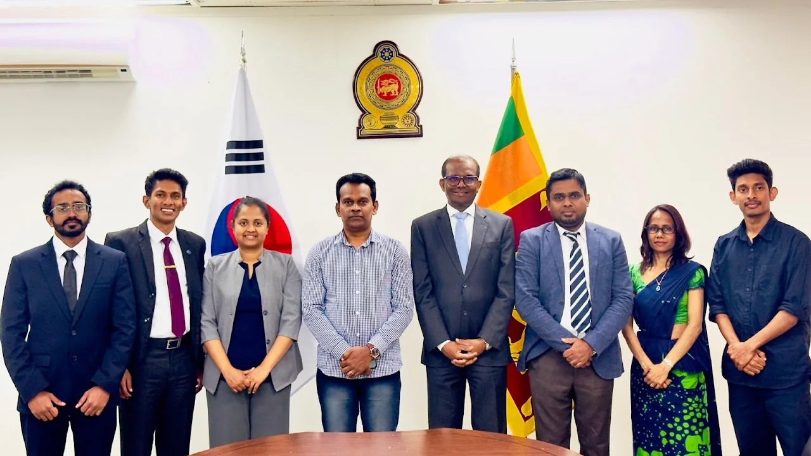
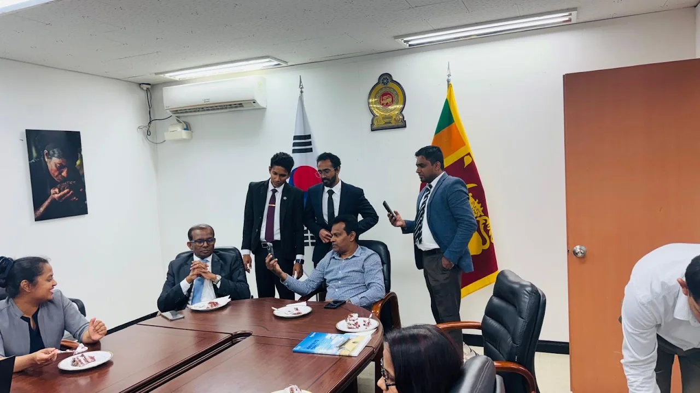
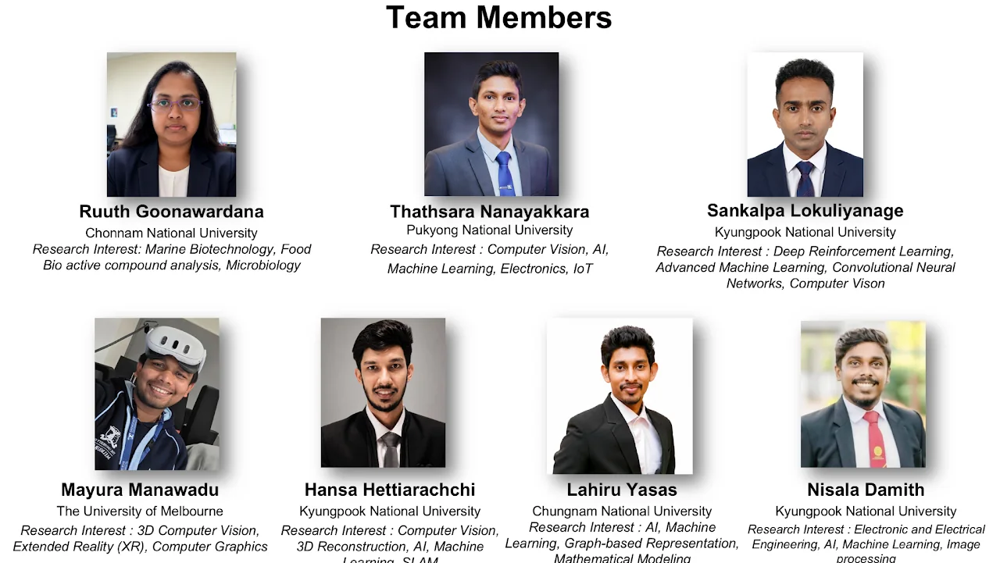
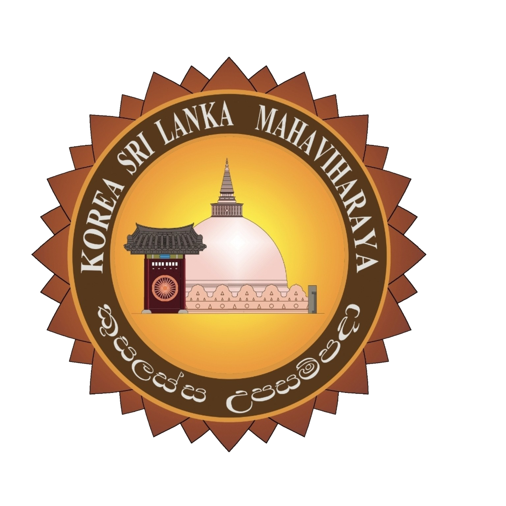
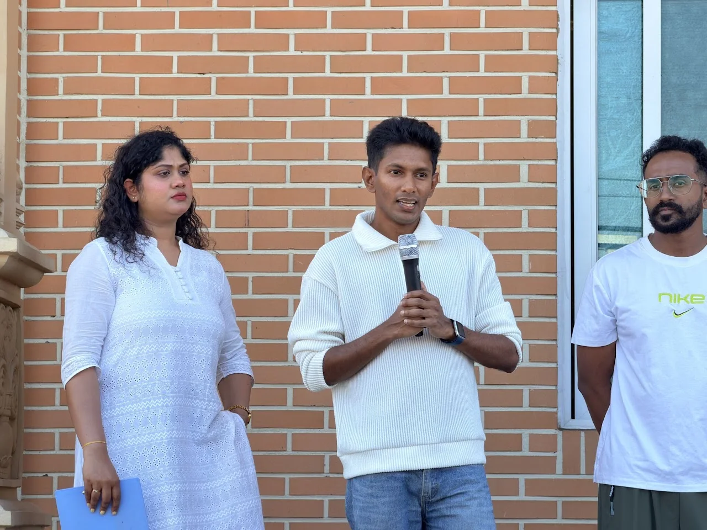
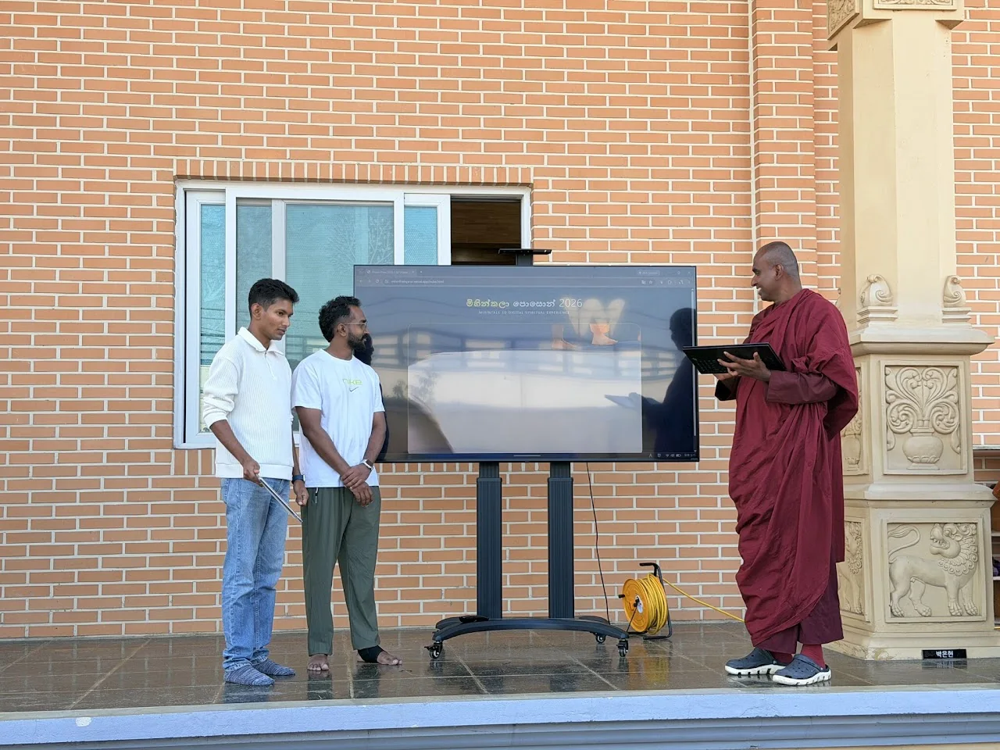
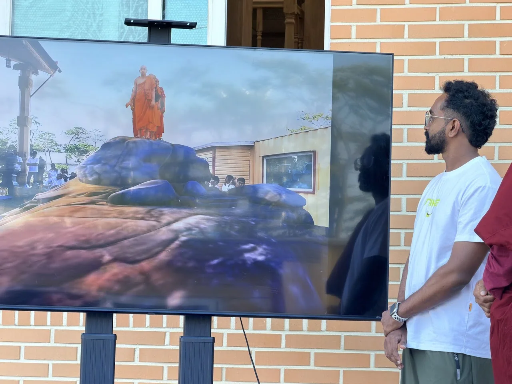
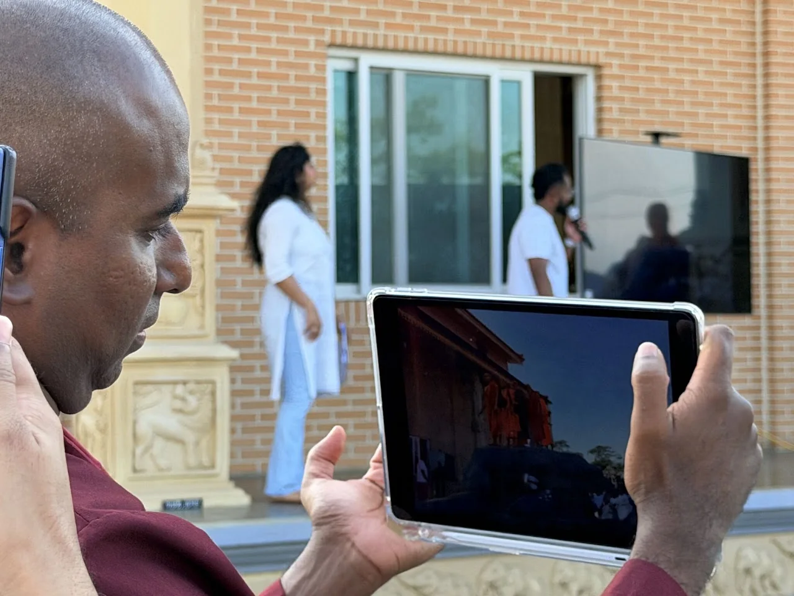
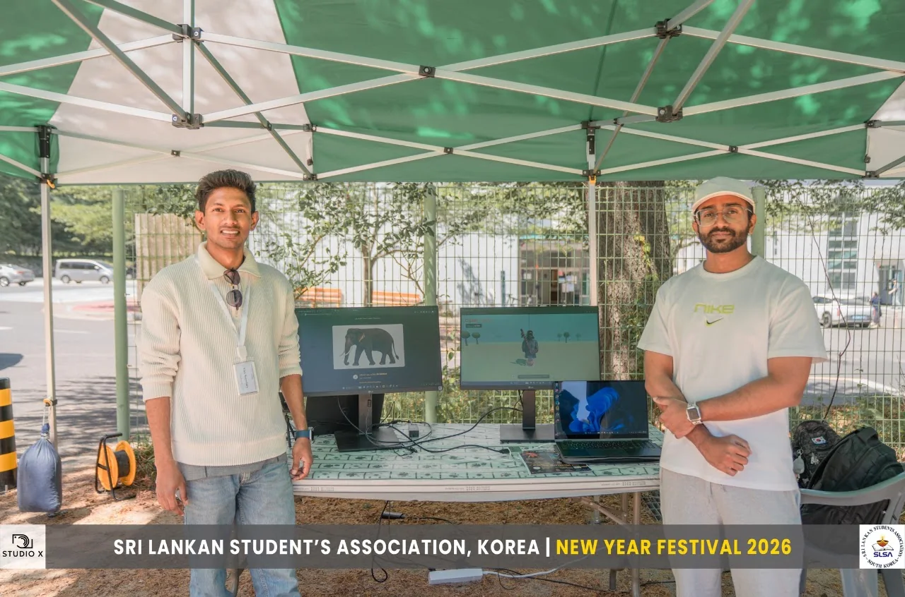

PROPOSAL DISCUSSION & PRESENTATION
Project ශ්රී XR – AR/MR Smart Heritage Initiative
With Hon. Ruwan Ranasinghe, Deputy Minister of Tourism
Embassy of Sri Lanka, Seoul, South Korea


IDEAS TECHNOLOGY A SAFER TOMORROW
FOUNDER SCIENTIST ENGINEER
Engineering ideas. Building impact.
PEOPLE
IDEAS
SECURITY
A BRIGHTER
TOMORROW
SCIENCE
TECHNOLOGY
PEOPLE
IMPACT
Connecting students with global study opportunities.
View projectA complete POS system for efficient retail operations.
View projectThe official digital home for the international event.
View projectMenu discovery and streamlined online reservations.
View project
The official website for Sri Lanka Mahaviharaya in South Korea.
View projectA polished digital presence for Sri Lankan cuisine.
View projectA simpler way to buy and sell vehicles through mobile.
View projectIMMERSIVE HERITAGE / AI EXPERIENCES
PROJECT ශ්රී XR
Developing immersive AR/MR experiences that connect Sri Lankan heritage, emerging technology, and communities in South Korea.
PROPOSAL DISCUSSION & PRESENTATION



FIRST-EVER MIXED REALITY EXPERIENCE




INTERACTIVE AI EXPERIENCE

ABOUT / APPROACH
RESEARCH BUILD SECURE
I work where software, security, science, and business meet.
As Founder & CEO of MESSIORA, I lead the development of digital products focused on design, performance, and real-world value. I’m currently pursuing an MSc in Software at Kyungpook National University in Daegu, South Korea.
My approach is simple: understand deeply, engineer deliberately, and create measurable impact for people and organisations.
JOURNEY / RESEARCH
Education and engineering across Sri Lanka, Singapore, and South Korea.
Leading engineers and designers building reliable digital products.
Software engineering, emerging technology, and advanced algorithms.
Completed university Level 5 and built cross-cultural communication skills.
Class topper, focused on cryptography, network defence, and ethical hacking.
First Class Honours in software engineering and system architecture.
WHAT I BRING
Exploring complex problems through rigorous research.
RESEARCH · DATA · DISCOVERYBuilding reliable, scalable, and meaningful systems.
BUILD · AUTOMATE · SCALESecuring people, systems, and what matters most.
DEFEND · DETECT · EMPOWERTurning ideas into evidence, insight, and impact.
PUBLISH · COLLABORATE · ADVANCEHAVE AN IDEA WORTH BUILDING?